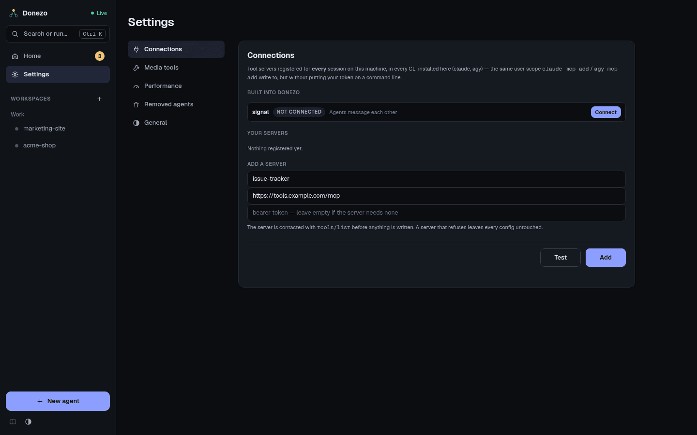
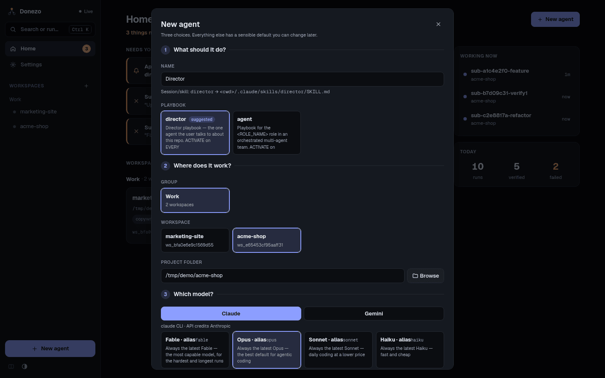

Getting started
Install the app, connect its tools, start a director, give it a task, and review the result.
Before you start
You need at least one of these CLIs (command-line programs), installed and logged in:
| CLI | Command | Install |
|---|---|---|
| Claude Code | claude | Install guide |
| Antigravity (Gemini) | agy | CLI reference |
Sub-agents run on Claude unless you choose otherwise, so install Claude Code if you plan to use a director. Your project should be a git repository, because sub-agents need git to work on their own copy.
1. Install the orchestrator
Windows, prebuilt
Download agent-orch-windows-x64.zip from
Releases. Unblock it before you unzip,
or SmartScreen flags every file inside:
Unblock-File agent-orch-windows-x64.zipUnzip it and run agent-orch.exe inside the folder. Keep the folder together. The console window that opens
is the server: close it to stop.
Windows, from source
In PowerShell, with Python 3.12 (winget install Python.Python.3.12) and Git (winget install Git.Git):
git clone https://github.com/xnoname79/unity-agent-orchestrator.git
cd unity-agent-orchestrator
py -3.12 -m venv .venv
.venv\Scripts\Activate.ps1
pip install -r requirements.txt
python session_orchestrator.py servemacOS
The python3 built into macOS is 3.9, which is too old. Use Homebrew's:
brew install python@3.12 git
git clone https://github.com/xnoname79/unity-agent-orchestrator.git
cd unity-agent-orchestrator
python3.12 -m venv .venv && source .venv/bin/activate
pip install -r requirements.txt
python session_orchestrator.py serveLinux (Debian, Ubuntu; Python 3.10 or newer)
sudo apt install python3 python3-venv git
git clone https://github.com/xnoname79/unity-agent-orchestrator.git
cd unity-agent-orchestrator
python3 -m venv .venv && source .venv/bin/activate
pip install -r requirements.txt
python session_orchestrator.py serveThen open http://localhost:8992 in your browser. You land on Home.
2. Connect signal
signal is the tool server built into the orchestrator. Agents use it to message each other, and the
director uses it to delegate work. It speaks MCP (Model Context Protocol), the standard way a CLI gets extra tools.
- In the left sidebar, click Settings. Connections opens first.
- Next to
signal, press Connect.

The orchestrator tests the server first, then registers it with every CLI installed on this machine. The row now shows how many tools it has, with Check and Remove buttons. Agents already running pick it up after a restart.
Or connect by hand, once per CLI
claude mcp add --transport http --scope user signal http://127.0.0.1:8992/signal/mcp
agy mcp add signal http://127.0.0.1:8992/signal/mcp3. Create a workspace
A workspace holds a set of agents that can message each other. The first group of workspaces is named Workspaces; you can rename it with its pencil button.
- On Home, click the New workspace tile.
- Type a name, for example
acme-shop. A box confirms the workspace's id and its own folder.
The workspace opens. It is empty until you add an agent.
4. Start a director
Press New agent and make three choices:

- What should it do? Type a Name such as
Director. It is turned into a folder-style name,director. Under Playbook, choose director. A playbook is the written instructions the agent follows. - Where does it work? Pick the Group and Workspace. Then set the Project folder to your git project: type a path, or press Browse. It starts filled with the workspace's own empty folder, so change it.
- Which model? Choose a tab, Claude or Gemini, then a model. The effort is under More options — thinking effort; the default is fine for a first run.
Press Create agent. The director appears as a terminal card on the canvas.
Its first run is automatic. The agent reads your project and fills in its own playbook. While that happens, the card shows An automatic run is in progress instead of a terminal. When the card says The automatic run finished, press the reload button on the card's left edge (its tooltip reads Reload the session/terminal (restarts the selected CLI)).
5. Give it a first task
Type into the director's terminal, as you would in the CLI. Start with something small:
Add a coupon code field to checkout. A valid code reduces the total, and an
invalid code shows an error.You can also click the card and use the Message… box at the bottom of the panel on the right. That sends the task as a background run, so the terminal locks until the run ends, then you press reload again.
The director reads the code, writes a brief and a Done means for each unit, and starts
sub-agents. A small badge such as 2 sub-agents appears on its card, and a number appears on the
Team tab.
6. Review the result
- Open the Team tab. Each sub-agent is a card that moves through Building, Verifying, then Passed or Failed.
- On a passed card, press Diff to read the change. Open Details for the brief, the verifier's evidence, and the builder's report.
- Go back to the director. Its playbook tells it to read the diff, merge the branch, run the project's checks, and report what changed with the evidence. It does not push unless you ask.
A failed sub-agent also shows up on Home under Needs you. See how the verifier decides and the inbox.